ProgrTest K70520NE RCNE520E31
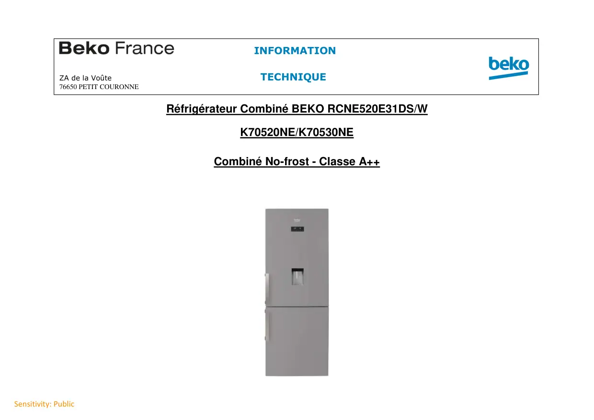
Sensitivity: PublicRéfrigérateur Combiné BEKO RCNE520E31DS/WK70520NE/K70530NECombiné No-frost - Classe A++INFORMATIONZA de la Voûte TECHNIQUE76650 PETIT COURONNE
1 / 25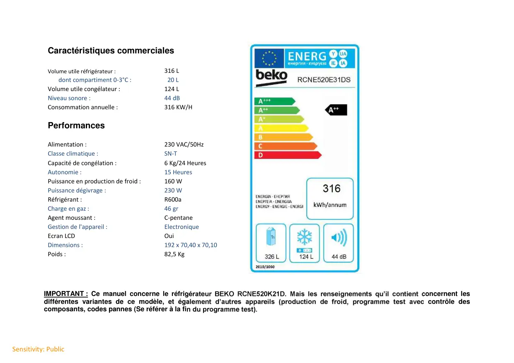
Sensitivity: PublicCaractéristiques commercialesVolume utile réfrigérateur :316 Ldont compartiment 0-3°C :20 LVolume utile congélateur :124 LNiveau sonore :44 dBConsommation annuelle :316 KW/HPerformancesAlimentation :230 VAC/50HzClasse climatique :SN-TCapacité de congélation :6 Kg/24 HeuresAutonomie :15 HeuresPuissance en production de froid :160 WPuissance dégivrage :230 WRéfrigérant :R600aCharge en gaz :46 grAgent moussant :C-pentaneGestion de l'appareil :ElectroniqueEcran LCDOuiDimensions :192 x 70,40 x 70,10Poids :82,5 KgIMPORTANT : Ce manuel concerne le réfrigérateur BEKO RCNE520K21D. Mais les renseignements qu’il contient concernent lesdifférentes variantes de ce modèle, et également d’autres appareils (production de froid, programme test avec contrôle descomposants, codes pannes (Se référer à la fin du programme test).
2 / 25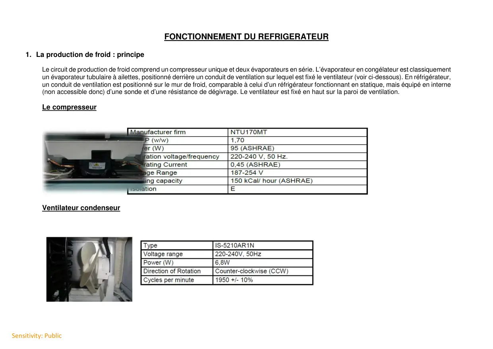
Sensitivity: PublicFONCTIONNEMENT DU REFRIGERATEUR1. La production de froid : principeLe circuit de production de froid comprend un compresseur unique et deux évaporateurs en série. L’évaporateur en congélateur est classiquementun évaporateur tubulaire à ailettes, positionné derrière un conduit de ventilation sur lequel est fixé le ventilateur (voir ci-dessous). En réfrigérateur,un conduit de ventilation est positionné sur le mur de froid, comparable à celui d’un réfrigérateur fonctionnant en statique, mais équipé en interne(non accessible donc) d’une sonde et d’une résistance de dégivrage. Le ventilateur est fixé en haut sur la paroi de ventilation.Le compresseurVentilateur condenseur
3 / 25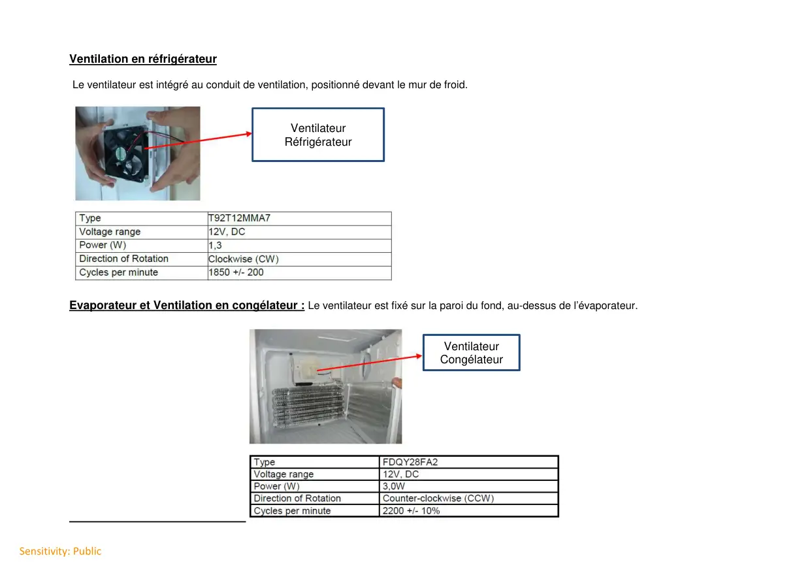
Sensitivity: PublicVentilation en réfrigérateurLe ventilateur est intégré au conduit de ventilation, positionné devant le mur de froid.Evaporateur et Ventilation en congélateur : Le ventilateur est fixé sur la paroi du fond, au-dessus de l’évaporateur.VentilateurRéfrigérateurVentilateurCongélateur
4 / 25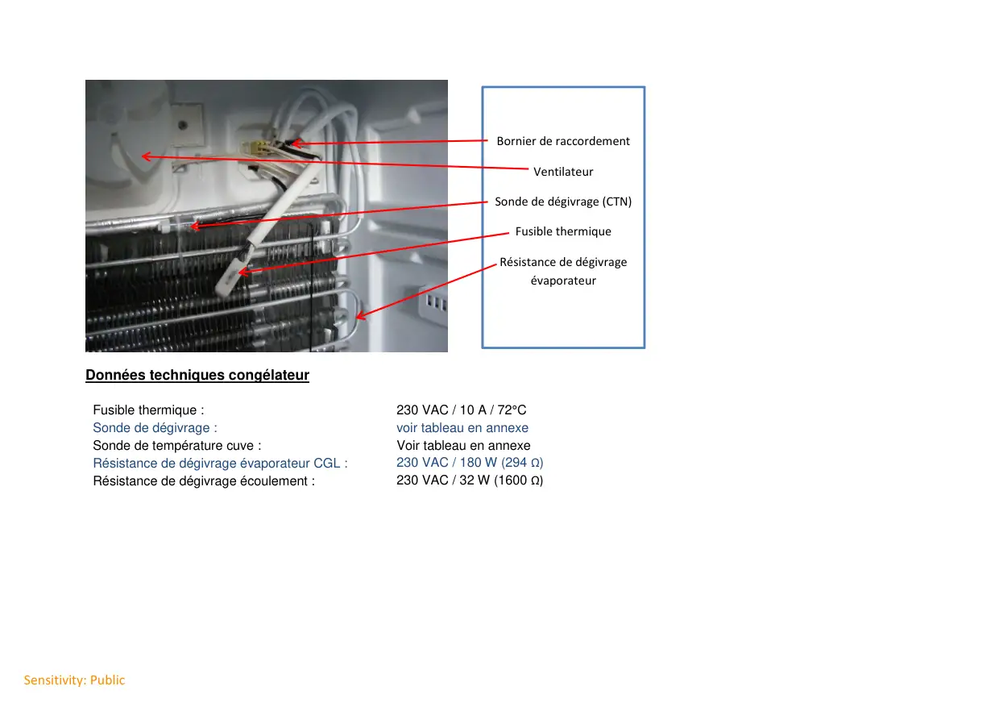
Sensitivity: PublicDonnées techniques congélateurFusible thermique :230 VAC / 10 A / 72°CSonde de dégivrage :voir tableau en annexeSonde de température cuve :Voir tableau en annexeRésistance de dégivrage évaporateur CGL : 230 VAC / 180 W (294 Ω)Résistance de dégivrage écoulement :230 VAC / 32 W (1600 Ω)Bornier de raccordementVentilateurSonde de dégivrage (CTN)Fusible thermiqueRésistance de dégivrageévaporateur
5 / 25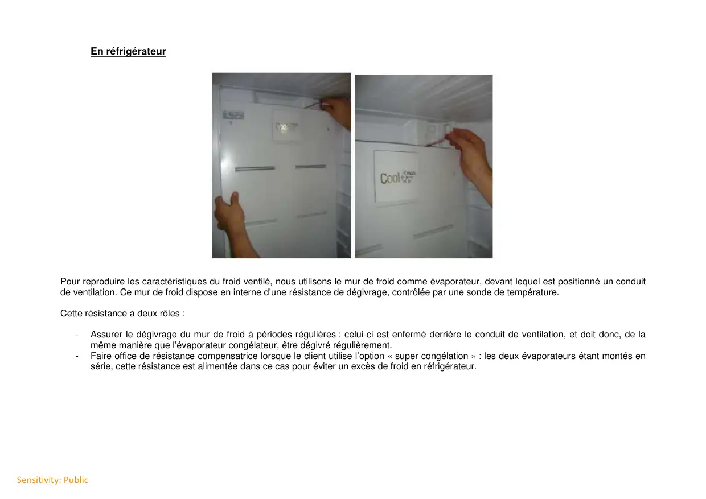
Sensitivity: PublicEn réfrigérateurPour reproduire les caractéristiques du froid ventilé, nous utilisons le mur de froid comme évaporateur, devant lequel est positionné un conduitde ventilation. Ce mur de froid dispose en interne d’une résistance de dégivrage, contrôlée par une sonde de température.Cette résistance a deux rôles :-Assurer le dégivrage du mur de froid à périodes régulières : celui-ci est enfermé derrière le conduit de ventilation, et doit donc, de lamême manière que l’évaporateur congélateur, être dégivré régulièrement.-Faire office de résistance compensatrice lorsque le client utilise l’option « super congélation » : les deux évaporateurs étant montés ensérie, cette résistance est alimentée dans ce cas pour éviter un excès de froid en réfrigérateur.
6 / 25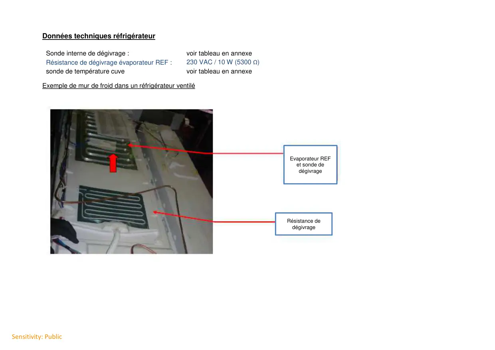
Sensitivity: PublicDonnées techniques réfrigérateurSonde interne de dégivrage : voir tableau en annexeRésistance de dégivrage évaporateur REF : 230 VAC / 10 W (5300 Ω)sonde de température cuvevoir tableau en annexeExemple de mur de froid dans un réfrigérateur ventiléEvaporateur REFet sonde dedégivrageRésistance dedégivrage
7 / 25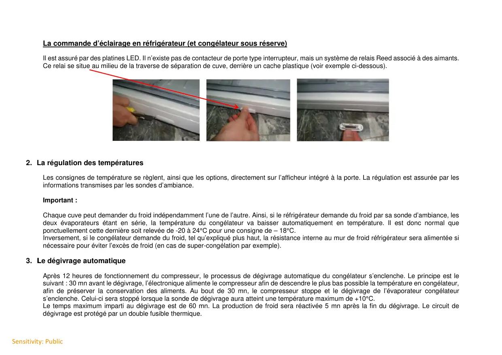
Sensitivity: PublicLa commande d’éclairage en réfrigérateur (et congélateur sous réserve)Il est assuré par des platines LED. Il n’existe pas de contacteur de porte type interrupteur, mais un système de relais Reed associé à des aimants.Ce relai se situe au milieu de la traverse de séparation de cuve, derrière un cache plastique (voir exemple ci-dessous).2. La régulation des températuresLes consignes de température se règlent, ainsi que les options, directement sur l’afficheur intégré à la porte. La régulation est assurée par lesinformations transmises par les sondes d’ambiance.Important :Chaque cuve peut demander du froid indépendamment l’une de l’autre. Ainsi, si le réfrigérateur demande du froid par sa sonde d’ambiance, lesdeux évaporateurs étant en série, la température du congélateur va baisser automatiquement en température. Il est donc normal queponctuellement cette dernière soit relevée de -20 à 24°C pour une consigne de – 18°C.Inversement, si le congélateur demande du froid, tel qu’expliqué plus haut, la résistance interne au mur de froid réfrigérateur sera alimentée sinécessaire pour éviter l’excès de froid (en cas de super-congélation par exemple).3. Le dégivrage automatiqueAprès 12 heures de fonctionnement du compresseur, le processus de dégivrage automatique du congélateur s’enclenche. Le principe est lesuivant : 30 mn avant le dégivrage, l’électronique alimente le compresseur afin de descendre le plus bas possible la température en congélateur,afin de préserver la conservation des aliments. Au bout de 30 mn, le compresseur stoppe et le dégivrage de l’évaporateur congélateurs’enclenche. Celui-ci sera stoppé lorsque la sonde de dégivrage aura atteint une température maximum de +10°C.Le temps maximum imparti au dégivrage est de 60 mn. La production de froid sera réactivée 5 mn après la fin du dégivrage. Le circuit dedégivrage est protégé par un double fusible thermique.
8 / 25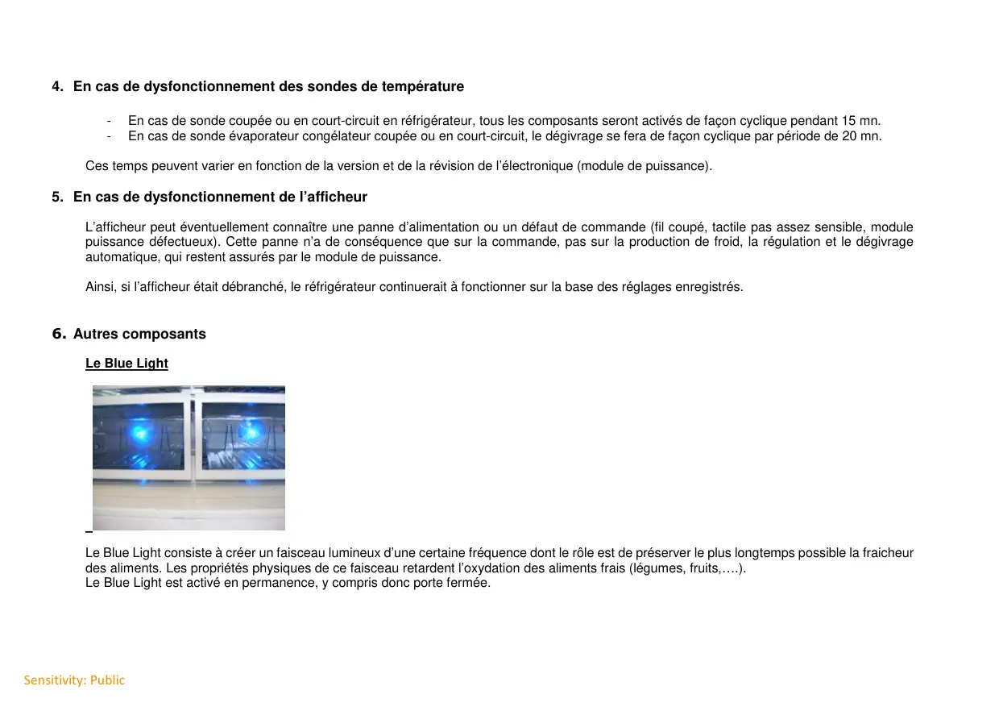
Sensitivity: Public4. En cas de dysfonctionnement des sondes de température-En cas de sonde coupée ou en court-circuit en réfrigérateur, tous les composants seront activés de façon cyclique pendant 15 mn.-En cas de sonde évaporateur congélateur coupée ou en court-circuit, le dégivrage se fera de façon cyclique par période de 20 mn.Ces temps peuvent varier en fonction de la version et de la révision de l’électronique (module de puissance).5. En cas de dysfonctionnement de l’afficheurL’afficheur peut éventuellement connaître une panne d’alimentation ou un défaut de commande (fil coupé, tactile pas assez sensible, modulepuissance défectueux). Cette panne n’a de conséquence que sur la commande, pas sur la production de froid, la régulation et le dégivrageautomatique, qui restent assurés par le module de puissance.Ainsi, si l’afficheur était débranché, le réfrigérateur continuerait à fonctionner sur la base des réglages enregistrés.6. Autres composantsLe Blue LightLe Blue Light consiste à créer un faisceau lumineux d’une certaine fréquence dont le rôle est de préserver le plus longtemps possible la fraicheurdes aliments. Les propriétés physiques de ce faisceau retardent l’oxydation des aliments frais (légumes, fruits,….).Le Blue Light est activé en permanence, y compris donc porte fermée.
9 / 25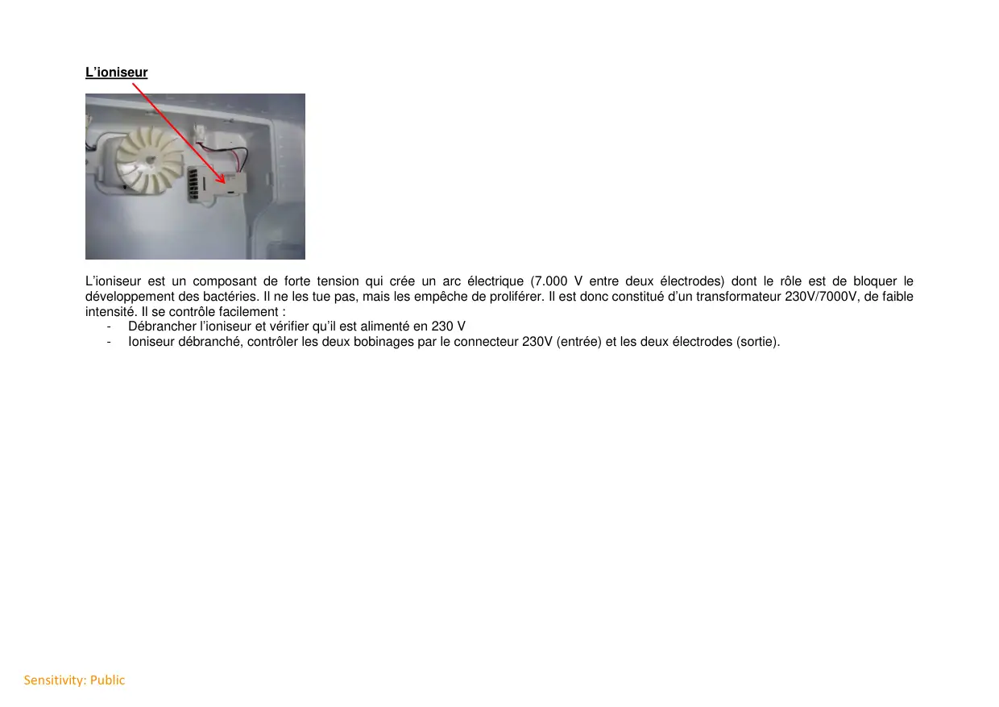
Sensitivity: PublicL’ioniseurL’ioniseur est un composant de forte tension qui crée un arc électrique (7.000 V entre deux électrodes) dont le rôle est de bloquer ledéveloppement des bactéries. Il ne les tue pas, mais les empêche de proliférer. Il est donc constitué d’un transformateur 230V/7000V, de faibleintensité. Il se contrôle facilement :-Débrancher l’ioniseur et vérifier qu’il est alimenté en 230 V-Ioniseur débranché, contrôler les deux bobinages par le connecteur 230V (entrée) et les deux électrodes (sortie).
10 / 25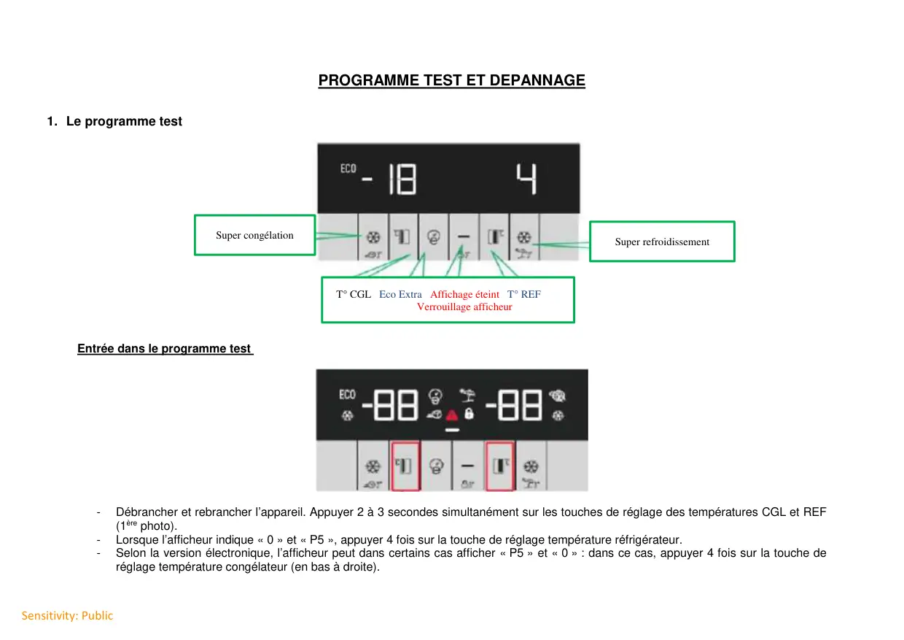
Sensitivity: PublicPROGRAMME TEST ET DEPANNAGE1. Le programme testEntrée dans le programme test-Débrancher et rebrancher l’appareil. Appuyer 2 à 3 secondes simultanément sur les touches de réglage des températures CGL et REF(1ère photo).-Lorsque l’afficheur indique « 0 » et « P5 », appuyer 4 fois sur la touche de réglage température réfrigérateur.-Selon la version électronique, l’afficheur peut dans certains cas afficher « P5 » et « 0 » : dans ce cas, appuyer 4 fois sur la touche deréglage température congélateur (en bas à droite).T° CGL Eco Extra Affichage éteint T° REFVerrouillage afficheurSuper refroidissementSuper congélation
11 / 25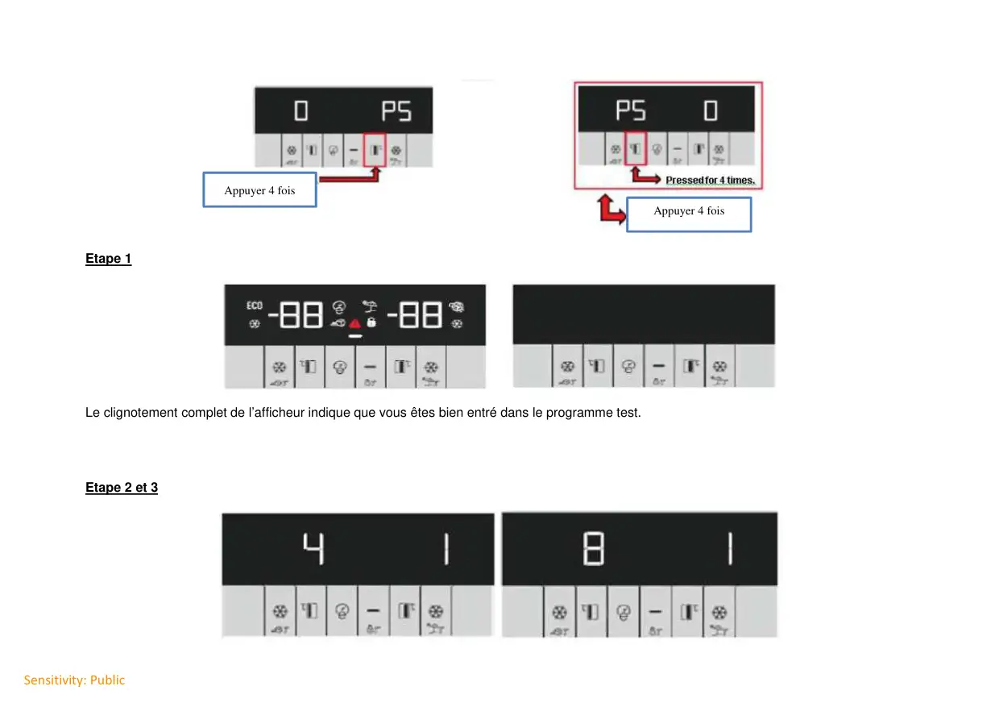
Sensitivity: PublicEtape 1Le clignotement complet de l’afficheur indique que vous êtes bien entré dans le programme test.Etape 2 et 3Appuyer 4 foisAppuyer 4 fois
12 / 25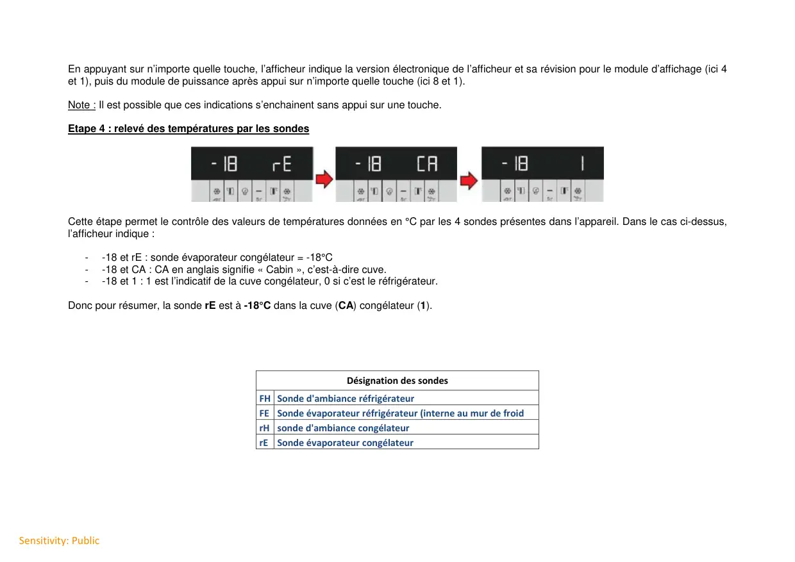
Sensitivity: PublicEn appuyant sur n’importe quelle touche, l’afficheur indique la version électronique de l’afficheur et sa révision pour le module d’affichage (ici 4et 1), puis du module de puissance après appui sur n’importe quelle touche (ici 8 et 1).Note : Il est possible que ces indications s’enchainent sans appui sur une touche.Etape 4 : relevé des températures par les sondesCette étape permet le contrôle des valeurs de températures données en °C par les 4 sondes présentes dans l’appareil. Dans le cas ci-dessus,l’afficheur indique :--18 et rE : sonde évaporateur congélateur = -18°C--18 et CA : CA en anglais signifie « Cabin », c’est-à-dire cuve.--18 et 1 : 1 est l’indicatif de la cuve congélateur, 0 si c’est le réfrigérateur.Donc pour résumer, la sonde rE est à -18°C dans la cuve (CA) congélateur (1).Désignation des sondesFH Sonde d'ambiance réfrigérateurFE Sonde évaporateur réfrigérateur (interne au mur de froidrH sonde d'ambiance congélateurrE Sonde évaporateur congélateur
13 / 25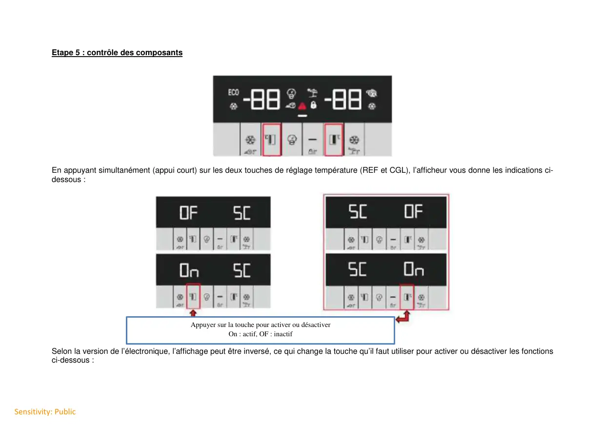
Sensitivity: PublicEtape 5 : contrôle des composantsEn appuyant simultanément (appui court) sur les deux touches de réglage température (REF et CGL), l’afficheur vous donne les indications ci-dessous :Selon la version de l’électronique, l’affichage peut être inversé, ce qui change la touche qu’il faut utiliser pour activer ou désactiver les fonctionsci-dessous :Appuyer sur la touche pour activer ou désactiverOn : actif, OF : inactif
14 / 25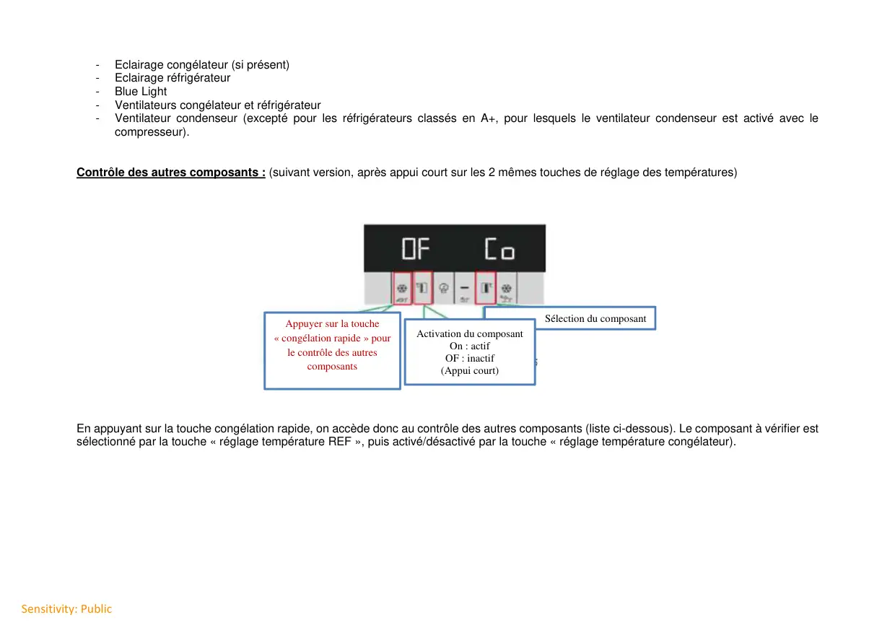
Sensitivity: Public-Eclairage congélateur (si présent)-Eclairage réfrigérateur-Blue Light-Ventilateurs congélateur et réfrigérateur-Ventilateur condenseur (excepté pour les réfrigérateurs classés en A+, pour lesquels le ventilateur condenseur est activé avec lecompresseur).Contrôle des autres composants : (suivant version, après appui court sur les 2 mêmes touches de réglage des températures)En appuyant sur la touche congélation rapide, on accède donc au contrôle des autres composants (liste ci-dessous). Le composant à vérifier estsélectionné par la touche « réglage température REF », puis activé/désactivé par la touche « réglage température congélateur).Sélection du composantActivation du composantOn : actifOF : inactif(Appui court)Appuyer sur la touche« congélation rapide » pourle contrôle des autrescomposants
15 / 25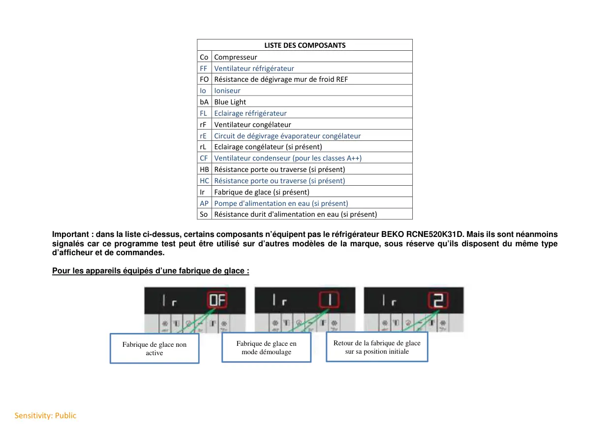
Sensitivity: PublicLISTE DES COMPOSANTSCo CompresseurFF Ventilateur réfrigérateurFO Résistance de dégivrage mur de froid REFIo IoniseurbA Blue LightFL Eclairage réfrigérateurrF Ventilateur congélateurrE Circuit de dégivrage évaporateur congélateurrL Eclairage congélateur (si présent)CF Ventilateur condenseur (pour les classes A++)HB Résistance porte ou traverse (si présent)HC Résistance porte ou traverse (si présent)IrFabrique de glace (si présent)AP Pompe d'alimentation en eau (si présent)So Résistance durit d'alimentation en eau (si présent)Important : dans la liste ci-dessus, certains composants n’équipent pas le réfrigérateur BEKO RCNE520K31D. Mais ils sont néanmoinssignalés car ce programme test peut être utilisé sur d’autres modèles de la marque, sous réserve qu’ils disposent du même typed’afficheur et de commandes.Pour les appareils équipés d’une fabrique de glace :Fabrique de glace nonactiveFabrique de glace enmode démoulageRetour de la fabrique de glacesur sa position initiale
16 / 25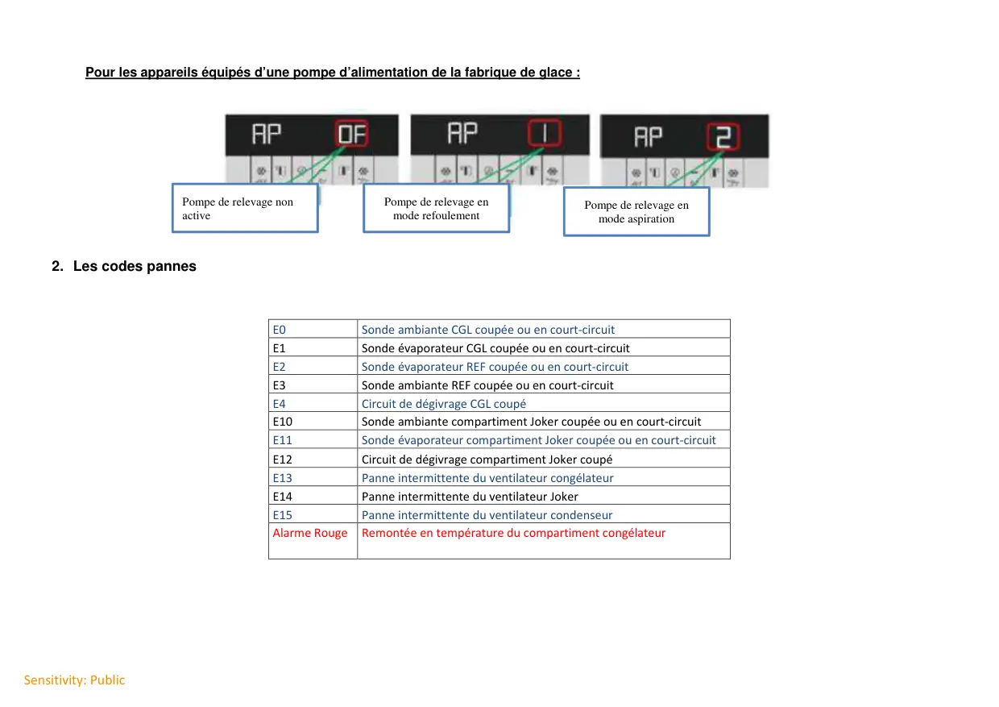
Sensitivity: PublicPour les appareils équipés d’une pompe d’alimentation de la fabrique de glace :2. Les codes pannesE0Sonde ambiante CGL coupée ou en court-circuitE1Sonde évaporateur CGL coupée ou en court-circuitE2Sonde évaporateur REF coupée ou en court-circuitE3Sonde ambiante REF coupée ou en court-circuitE4Circuit de dégivrage CGL coupéE10Sonde ambiante compartiment Joker coupée ou en court-circuitE11Sonde évaporateur compartiment Joker coupée ou en court-circuitE12Circuit de dégivrage compartiment Joker coupéE13Panne intermittente du ventilateur congélateurE14Panne intermittente du ventilateur JokerE15Panne intermittente du ventilateur condenseurAlarme RougeRemontée en température du compartiment congélateurPompe de relevage nonactivePompe de relevage enmode refoulementPompe de relevage enmode aspiration
17 / 25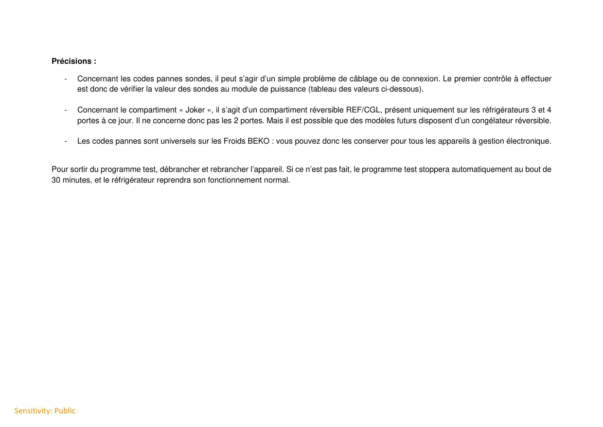
Sensitivity: PublicPrécisions :-Concernant les codes pannes sondes, il peut s’agir d’un simple problème de câblage ou de connexion. Le premier contrôle à effectuerest donc de vérifier la valeur des sondes au module de puissance (tableau des valeurs ci-dessous).-Concernant le compartiment « Joker », il s’agit d’un compartiment réversible REF/CGL, présent uniquement sur les réfrigérateurs 3 et 4portes à ce jour. Il ne concerne donc pas les 2 portes. Mais il est possible que des modèles futurs disposent d’un congélateur réversible.-Les codes pannes sont universels sur les Froids BEKO : vous pouvez donc les conserver pour tous les appareils à gestion électronique.Pour sortir du programme test, débrancher et rebrancher l’appareil. Si ce n’est pas fait, le programme test stoppera automatiquement au bout de30 minutes, et le réfrigérateur reprendra son fonctionnement normal.
18 / 25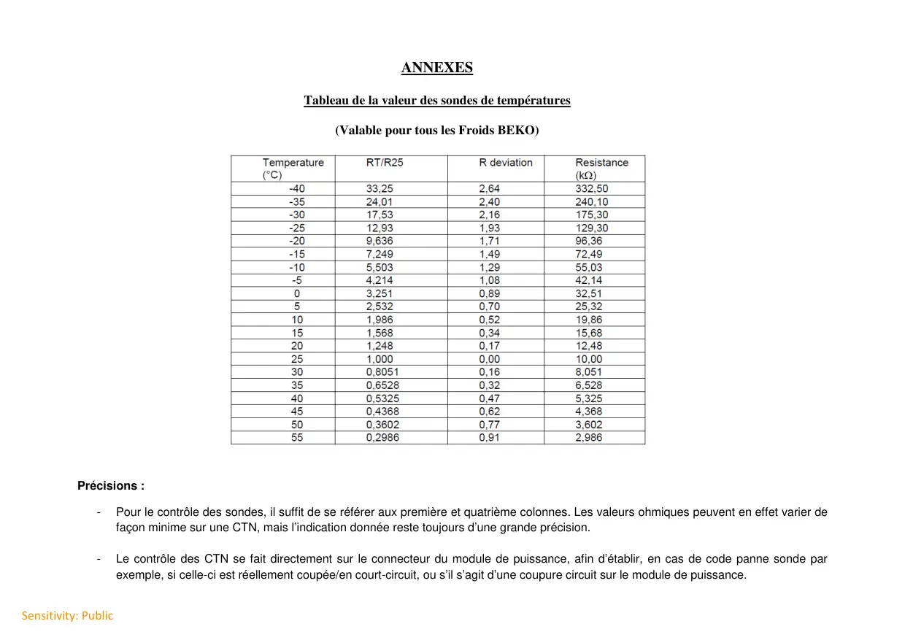
Sensitivity: PublicANNEXESTableau de la valeur des sondes de températures(Valable pour tous les Froids BEKO)Précisions :-Pour le contrôle des sondes, il suffit de se référer aux première et quatrième colonnes. Les valeurs ohmiques peuvent en effet varier defaçon minime sur une CTN, mais l’indication donnée reste toujours d’une grande précision.-Le contrôle des CTN se fait directement sur le connecteur du module de puissance, afin d’établir, en cas de code panne sonde parexemple, si celle-ci est réellement coupée/en court-circuit, ou s’il s’agit d’une coupure circuit sur le module de puissance.
19 / 25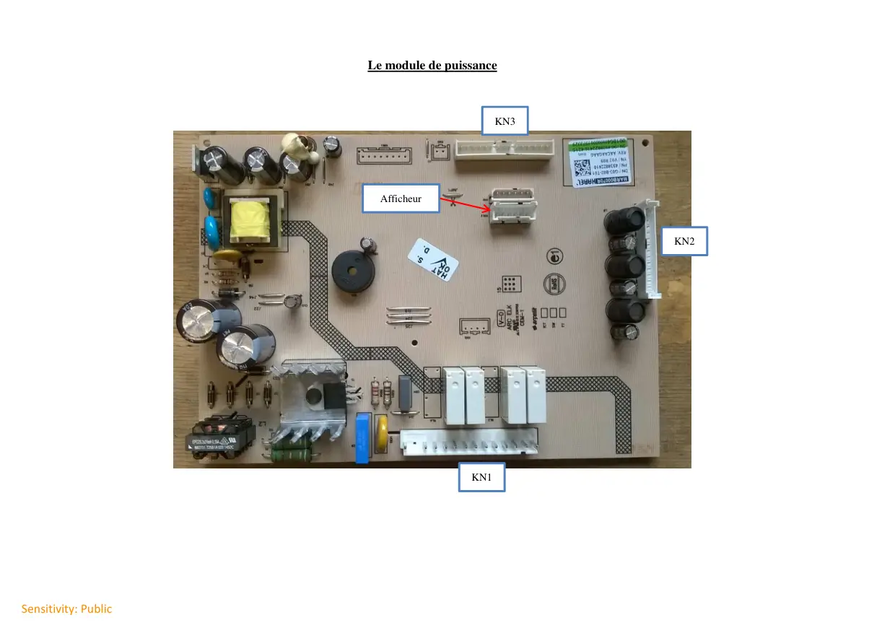
Sensitivity: PublicLe module de puissanceAfficheurKN1KN2KN3
20 / 25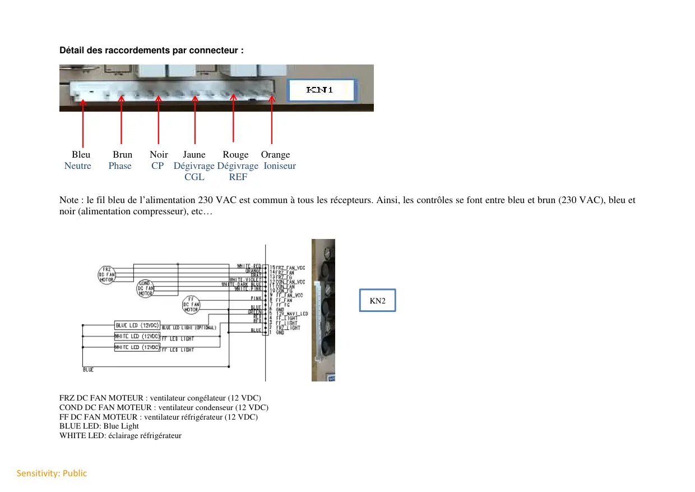
Sensitivity: PublicDétail des raccordements par connecteur :Bleu Brun Noir Jaune Rouge OrangeNeutre Phase CP Dégivrage Dégivrage IoniseurCGLREFNote : le fil bleu de l’alimentation 230 VAC est commun à tous les récepteurs. Ainsi, les contrôles se font entre bleu et brun (230 VAC), bleu etnoir (alimentation compresseur), etc…FRZ DC FAN MOTEUR : ventilateur congélateur (12 VDC)COND DC FAN MOTEUR : ventilateur condenseur (12 VDC)FF DC FAN MOTEUR : ventilateur réfrigérateur (12 VDC)BLUE LED: Blue LightWHITE LED: éclairage réfrigérateurKN2
21 / 25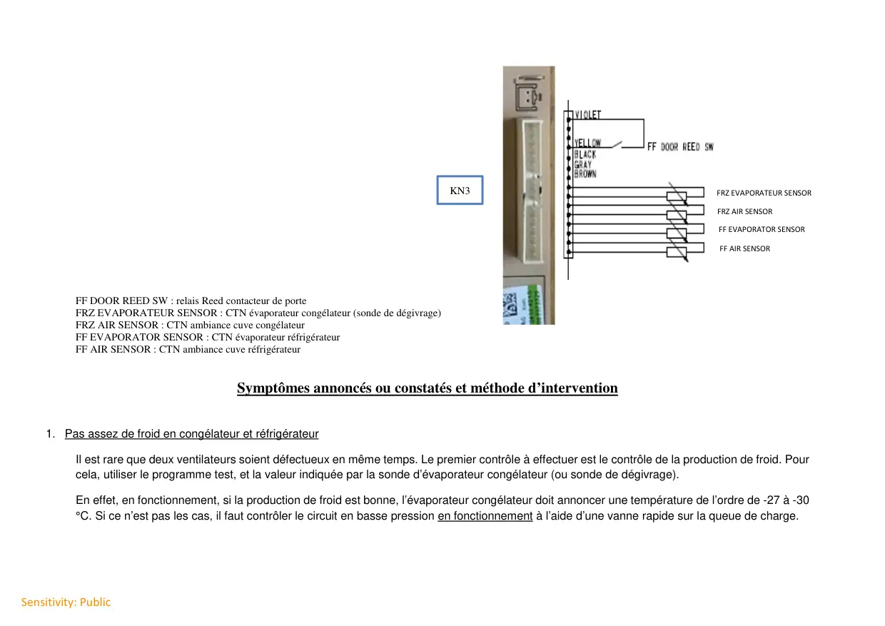
Sensitivity: PublicFF DOOR REED SW : relais Reed contacteur de porteFRZ EVAPORATEUR SENSOR : CTN évaporateur congélateur (sonde de dégivrage)FRZ AIR SENSOR : CTN ambiance cuve congélateurFF EVAPORATOR SENSOR : CTN évaporateur réfrigérateurFF AIR SENSOR : CTN ambiance cuve réfrigérateurSymptômes annoncés ou constatés et méthode d’intervention1. Pas assez de froid en congélateur et réfrigérateurIl est rare que deux ventilateurs soient défectueux en même temps. Le premier contrôle à effectuer est le contrôle de la production de froid. Pourcela, utiliser le programme test, et la valeur indiquée par la sonde d’évaporateur congélateur (ou sonde de dégivrage).En effet, en fonctionnement, si la production de froid est bonne, l’évaporateur congélateur doit annoncer une température de l’ordre de -27 à -30°C. Si ce n’est pas les cas, il faut contrôler le circuit en basse pression en fonctionnement à l’aide d’une vanne rapide sur la queue de charge.KN3FRZ EVAPORATEUR SENSORFRZ AIR SENSORFF AIR SENSORFF EVAPORATOR SENSOR
22 / 25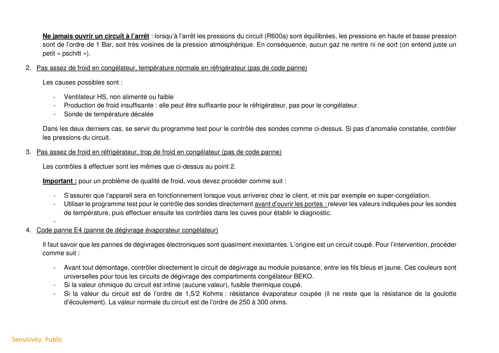
Sensitivity: PublicNe jamais ouvrir un circuit à l’arrêt : lorsqu’à l’arrêt les pressions du circuit (R600a) sont équilibrées, les pressions en haute et basse pressionsont de l’ordre de 1 Bar, soit très voisines de la pression atmosphérique. En conséquence, aucun gaz ne rentre ni ne sort (on entend juste unpetit « pschitt »).2. Pas assez de froid en congélateur, température normale en réfrigérateur (pas de code panne)Les causes possibles sont :-Ventilateur HS, non alimenté ou faible-Production de froid insuffisante : elle peut être suffisante pour le réfrigérateur, pas pour le congélateur.-Sonde de température décaléeDans les deux derniers cas, se servir du programme test pour le contrôle des sondes comme ci-dessus. Si pas d’anomalie constatée, contrôlerles pressions du circuit.3. Pas assez de froid en réfrigérateur, trop de froid en congélateur (pas de code panne)Les contrôles à effectuer sont les mêmes que ci-dessus au point 2.Important : pour un problème de qualité de froid, vous devez procéder comme suit :-S’assurer que l’appareil sera en fonctionnement lorsque vous arriverez chez le client, et mis par exemple en super-congélation.-Utiliser le programme test pour le contrôle des sondes directement avant d’ouvrir les portes : relever les valeurs indiquées pour les sondesde température, puis effectuer ensuite les contrôles dans les cuves pour établir le diagnostic.-4. Code panne E4 (panne de dégivrage évaporateur congélateur)Il faut savoir que les pannes de dégivrages électroniques sont quasiment inexistantes. L’origine est un circuit coupé. Pour l’intervention, procédercomme suit :-Avant tout démontage, contrôler directement le circuit de dégivrage au module puissance, entre les fils bleus et jaune. Ces couleurs sontuniverselles pour tous les circuits de dégivrage des compartiments congélateur BEKO.-Si la valeur ohmique du circuit est infinie (aucune valeur), fusible thermique coupé.-Si la valeur du circuit est de l’ordre de 1,5/2 Kohms : résistance évaporateur coupée (il ne reste que la résistance de la goulotted’écoulement). La valeur normale du circuit est de l’ordre de 250 à 300 ohms.
23 / 25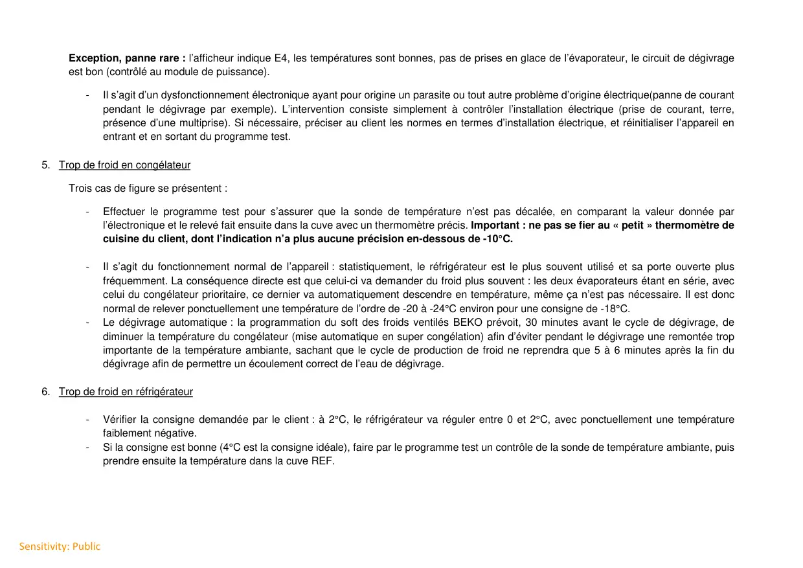
Sensitivity: PublicException, panne rare : l’afficheur indique E4, les températures sont bonnes, pas de prises en glace de l’évaporateur, le circuit de dégivrageest bon (contrôlé au module de puissance).-Il s’agit d’un dysfonctionnement électronique ayant pour origine un parasite ou tout autre problème d’origine électrique(panne de courantpendant le dégivrage par exemple). L’intervention consiste simplement à contrôler l’installation électrique (prise de courant, terre,présence d’une multiprise). Si nécessaire, préciser au client les normes en termes d’installation électrique, et réinitialiser l’appareil enentrant et en sortant du programme test.5. Trop de froid en congélateurTrois cas de figure se présentent :-Effectuer le programme test pour s’assurer que la sonde de température n’est pas décalée, en comparant la valeur donnée parl’électronique et le relevé fait ensuite dans la cuve avec un thermomètre précis. Important : ne pas se fier au « petit » thermomètre decuisine du client, dont l’indication n’a plus aucune précision en-dessous de -10°C.-Il s’agit du fonctionnement normal de l’appareil : statistiquement, le réfrigérateur est le plus souvent utilisé et sa porte ouverte plusfréquemment. La conséquence directe est que celui-ci va demander du froid plus souvent : les deux évaporateurs étant en série, aveccelui du congélateur prioritaire, ce dernier va automatiquement descendre en température, même ça n’est pas nécessaire. Il est doncnormal de relever ponctuellement une température de l’ordre de -20 à -24°C environ pour une consigne de -18°C.-Le dégivrage automatique : la programmation du soft des froids ventilés BEKO prévoit, 30 minutes avant le cycle de dégivrage, dediminuer la température du congélateur (mise automatique en super congélation) afin d’éviter pendant le dégivrage une remontée tropimportante de la température ambiante, sachant que le cycle de production de froid ne reprendra que 5 à 6 minutes après la fin dudégivrage afin de permettre un écoulement correct de l’eau de dégivrage.6. Trop de froid en réfrigérateur-Vérifier la consigne demandée par le client : à 2°C, le réfrigérateur va réguler entre 0 et 2°C, avec ponctuellement une températurefaiblement négative.-Si la consigne est bonne (4°C est la consigne idéale), faire par le programme test un contrôle de la sonde de température ambiante, puisprendre ensuite la température dans la cuve REF.
24 / 25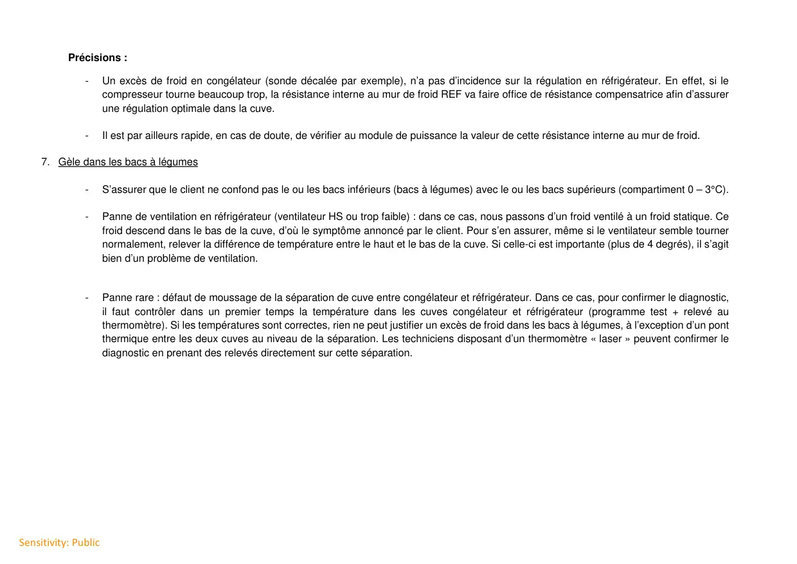
Sensitivity: PublicPrécisions :-Un excès de froid en congélateur (sonde décalée par exemple), n’a pas d’incidence sur la régulation en réfrigérateur. En effet, si lecompresseur tourne beaucoup trop, la résistance interne au mur de froid REF va faire office de résistance compensatrice afin d’assurerune régulation optimale dans la cuve.-Il est par ailleurs rapide, en cas de doute, de vérifier au module de puissance la valeur de cette résistance interne au mur de froid.7. Gèle dans les bacs à légumes-S’assurer que le client ne confond pas le ou les bacs inférieurs (bacs à légumes) avec le ou les bacs supérieurs (compartiment 0 – 3°C).-Panne de ventilation en réfrigérateur (ventilateur HS ou trop faible) : dans ce cas, nous passons d’un froid ventilé à un froid statique. Cefroid descend dans le bas de la cuve, d’où le symptôme annoncé par le client. Pour s’en assurer, même si le ventilateur semble tournernormalement, relever la différence de température entre le haut et le bas de la cuve. Si celle-ci est importante (plus de 4 degrés), il s’agitbien d’un problème de ventilation.-Panne rare : défaut de moussage de la séparation de cuve entre congélateur et réfrigérateur. Dans ce cas, pour confirmer le diagnostic,il faut contrôler dans un premier temps la température dans les cuves congélateur et réfrigérateur (programme test + relevé authermomètre). Si les températures sont correctes, rien ne peut justifier un excès de froid dans les bacs à légumes, à l’exception d’un pontthermique entre les deux cuves au niveau de la séparation. Les techniciens disposant d’un thermomètre « laser » peuvent confirmer lediagnostic en prenant des relevés directement sur cette séparation.
25 / 25